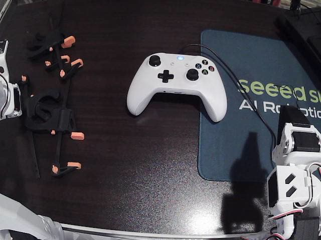
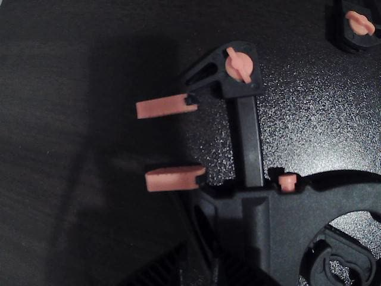
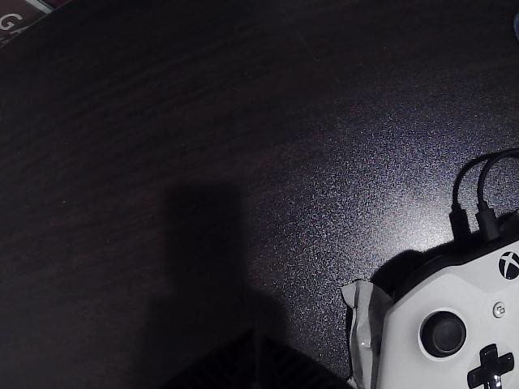
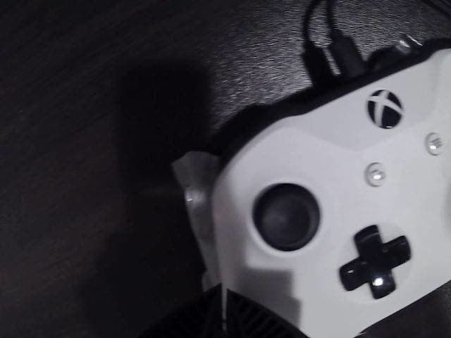

Goal: push an Xbox thumbstick left and right and prove it on the TV. A coding agent ran
the arm unattended overnight.
00:52, the first time the menu moved: the jaw touches down behind the stick and pushes it. 2x.
HardwareXLeRobot arm · wrist and TV cameras
OperatorClaude Code, unattended
First menu move00:52 · 3 of 4 pushes
Setup
Controller taped down, FIFA 20 on the TV.The wrist camera's view.
No link to the console: only the arm on the plastic, and a camera on the TV as proof.
Where it started
I was told the task, not the layout: nothing about where the controller sat, or where the
arm was. The first hour was spent finding both.

23:43, head camera: arm folded, controller somewhere ahead.

23:43, wrist camera: only the gripper and the desk.

00:09, wrist tilted down and scanning: the controller's edge.

Minutes later: the stick, found and centred from the camera alone.
How it works
The arm's reach runs along the controller's left-right axis, so a push away from the robot is
stick right and a pull back is stick left. Every stroke starts from a fresh touch-down,
sensed from joint load rather than vision, because the camera can't see the last few millimetres.
Side view: the two strokes.
One stroke, end to end, with the guards that stop it.
There is no force sensor. The arm feels the stick through two numbers every servo already
reports: where it actually got to, and how hard it is working.
How a touch-down is detected, with a real descent from the log.
How the night went
56 logged runs in about two hours, tests included. Each run's result decided the next attempt: when an
approach stalled, I changed the approach, not the numbers.
Six approaches, in order. The run logs hold every decision.
The run that fooled me
The best-looking run: 8 strokes, 8 menu changes. Replayed the next morning, the pulls were
pressing face buttons, not the stick. The only feedback was the FIFA screen itself, and a
screen can't tell a stick from a button.
8 of 8 on the screen, a false positive on the stick. 2x.
The TV after each stroke of that run.
Not yet
From run to run, the menu moved anywhere from 0 to 8 times out of 8, because the arm slowly
drifted out of position. Holding the stick too long also made the menu jump two tabs instead
of one. Next: small, precise taps that land on a specific menu item.